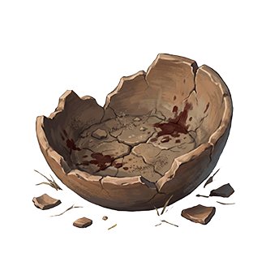
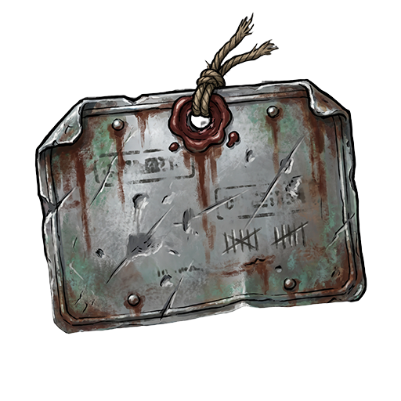
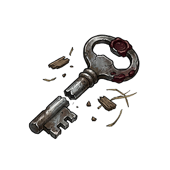

万音
一种穿透物质、意识与历史的异常噪声。旧神曾过滤它，旧神死后，世界开始寻找新的频率。


Vertical Slice Concept Showcase
Apostles of God-Ash
你醒了。很好，这具身体还没有拒绝你。
玩家扮演“无韵回响”：没有稳定人格、不会被共鸣瘟疫同化的容器。每一次死亡都会被无声圣匣回收，每一次残骸选择都会把力量、记忆和侵蚀装进同一具身体。
一种穿透物质、意识与历史的异常噪声。旧神曾过滤它，旧神死后，世界开始寻找新的频率。
收藏家维护的复活与记录装置。失败不会被清空，只会变成下一次样本。
不是普通技能，而是一块人格残骸。它给你活下去的方式，也学习你愿意付出的代价。
Low Whispering Field
低语田野不是普通农田。饥饿被制度化，名单、粮票、谷仓和土地共同决定谁应该被喂养，谁应该被忘掉。
Characters
不是丧尸，也不是恶魔。它是等待救济失败之后，仍然相信下一次会轮到自己的人。

他不觉得自己在杀人，只觉得播种、巡田、收割、登记，总要有人继续做完。

恐惧和命令被绑在一起之后留下的自动程序。它不追远，因为逃出去的人迟早会回来。

他曾让很多人活过冬天。田地接受了他，也学会了通过他继续索要。
Combat System


攻击与重击主动发起判定；蓄防会让下一次防御投两次 D20 取高，并在成功时反弹伤害；攻击累计三次后，大招投 D6 直伤，无视防御。


D20 决定命中与防御，D3 决定伤害或加成，D6 留给灰烛判决。结果不是桌游趣味，而是归档、证明和代价。
Remains





Classroom Route